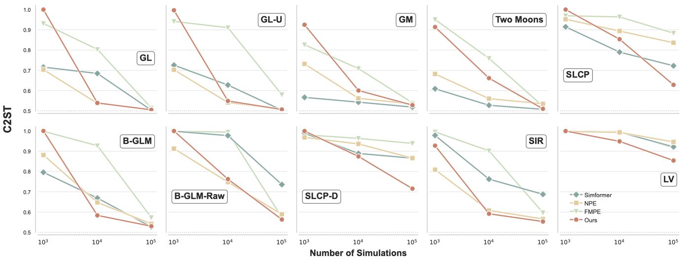
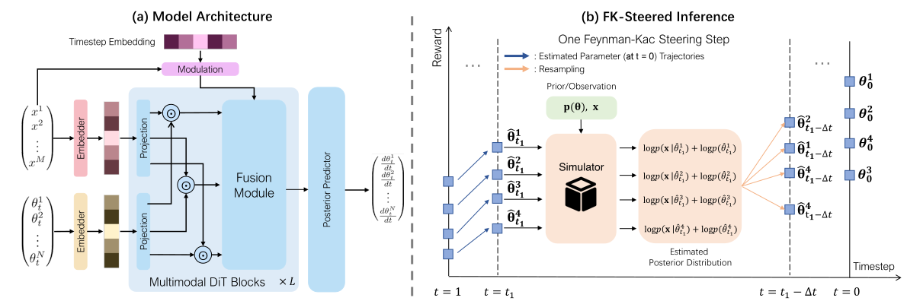
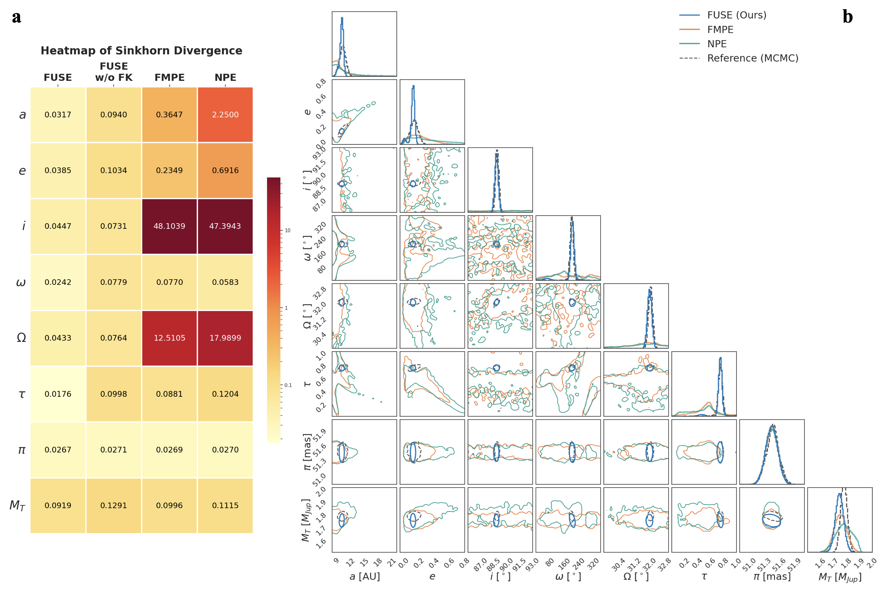
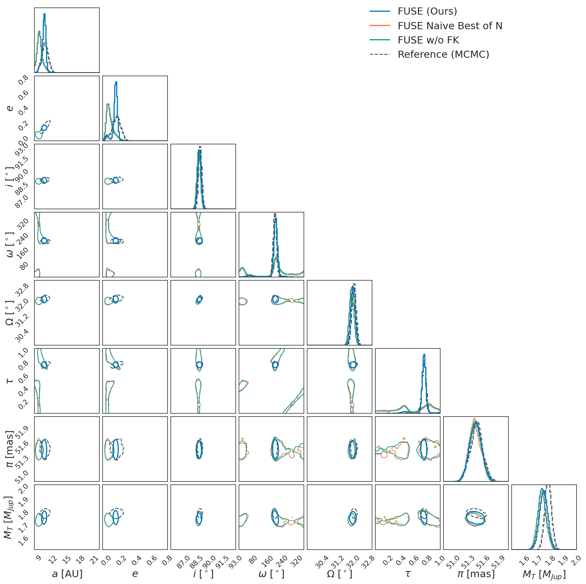

SBIBM Benchmark

ICML 2026
1ShanghaiTech University, Shanghai, China 2The University of Texas at Austin, Austin, TX, USA 3Center for Gravitational Wave Experiment, National Microgravity Laboratory, Institute of Mechanics, Chinese Academy of Sciences, Beijing 100190, China 4Taiji Laboratory for Gravitational Wave Universe (Beijing/Hangzhou), University of Chinese Academy of Sciences (UCAS), Beijing 100049, China 5Cellverse, Co., Ltd
Paper: Author camera-ready version
TL;DR: FUSE combines multi-modal flow matching with Feynman-Kac-steered sampling for efficient simulation-based posterior estimation, with strong results on SBIBM benchmarks and real-world beta Pictoris b orbital characterization.

Simulation-Based Inference is critical for scientific discovery, and generative models offer a promising path toward efficient posterior estimation. Existing methods often struggle with effective multimodal modeling and rely on fusion strategies that ignore structural differences between parameters and observations.
FUSE introduces a dual-track architecture that preserves distinct multimodal features while enabling dynamic interaction, together with an FK-steered sampling strategy that uses intermediate observation likelihoods to guide generative trajectories. The method improves posterior fidelity on standard SBI benchmarks and resolves complex degeneracies in beta Pictoris b orbital estimation.



Code is available on GitHub. Model artifacts and data resources are being prepared for external release and will be linked here as soon as they are available.
The arXiv preprint and OpenReview page are linked above. The PMLR link will be added once public. The current Paper link provides the author camera-ready version.
@inproceedings{qin2026fuse,
title = {FUSE: FK-Steered Multi-Modal Flow Matching for Efficient Simulation-Based Posterior Estimation},
author = {Qin, Weichen and Xie, Yufan and Wang, Peihao and Chou, Chia-Jui and Du, Minghui and Xu, Peng and Luo, Ziren and Yang, Yi and Yu, Jingyi and Liang, Bo and Zhang, Jiakai},
booktitle = {Proceedings of the International Conference on Machine Learning},
year = {2026}
}